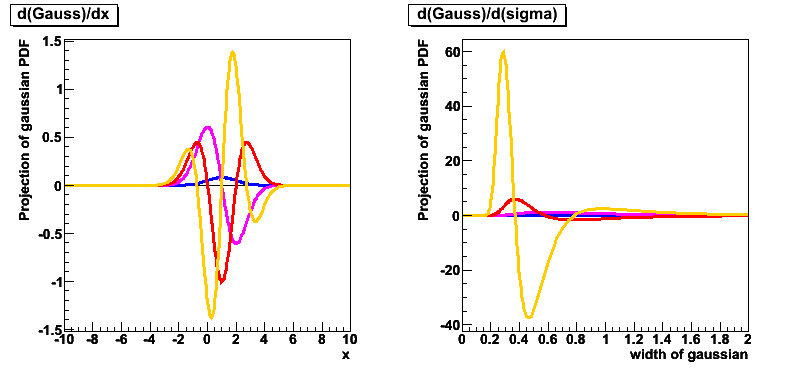

RooFitResult* fr = pdf->fitTo(*data,Save(),...) ;
pdf->plotOn(frame,VisualizeError(*fr),...) ;
Two techniques for error visualization are implemented. The default is
linear error progation, and results in an error band that is by
construction symmetric. The linear error is calculated as
error(x) = Z* F_a(x) * Corr(a,a') F_a'(x)
where F_a(x) = [ f(x,a+da) - f(x,a-da) ] / 2,
with f(x) = the plotted curve
'da' = error taken from the fit result
Corr(a,a') = the correlation matrix from the fit result
Z = requested significance 'Z sigma band'
The linear method is fast (requires 2*N evaluations of the curve,
where N is the number of parameters), but may not be accurate in the
presence of strong correlations (~>0.9) and at Z>2 due to linear and
Gaussian approximations made.
RooDataHist* data = pdf.generateBinned(x,10000) ;This binned generation interface samples the p.d.f. at each bin center and applies a Poisson fluctuation to each sampled value. The binning of the returned RooDataHist is controlled by the default binning associated with the observables generated. To set the number of bins in x to 200, do e.g. x.setBins(200) prior to the call to generateBinned()
// Minimization with MINUIT/MIGRAD through RooMinuit
pdf->fitTo(data) ;
// Minimization with MINUIT/MIGRAD through RooMinimizer
pdf->fitTo(data,Minimizer("minuit")) ;
// Minimization with MINUIT2/MIGRAD through RooMinimizer
pdf->fitTo(data,Minimizer("minuit2")) ;
// Minimization with GSLMultiMin/conjugatefr through RooMinimizer
pdf->fitTo(data,Minimizer("GSLMultiMin","conjugatefr")) ;
Note that installation of GSL and the ROOT MathMore package is needed to access the GSL Minimizers and that the GSL
Minimizer do not implement error analysis.
RooFit can now interface all MathCore numeric intergration algorithms. In this release ROOT::Math::AdaptiveIntegratorMultiDim, which implements the 'Genz & Malik' algorithm has been interfaced in RooAdaptiveIntegratorND and is now the default numeric integrator for numeric integrations in two or more dimensions.
This new default integrator has much improved stability and speed for relatively smooth p.d.f.s in two or three dimensions and can generally be used well for p.d.f. normalization integrals without causing MINUIT converge problems due to numeric precision issues.
In future release some more numeric integrators will be migrated to a MathCore implementation.
RooFit can now use the TFoam adaptive MC sampler for event generation of p.d.f.s that do not have an internal generator. The TFoam generator adaptively subdivides the observable space and is generally more efficient both warmup and generation than the original RooAcceptReject algorithm. In its current interface in RooFit, TFoam cannot handle problems yet with discrete observables or conditional observables. For those problems the original RooAcceptReject generator is still used.
The choice of MC sampling algorithm can be steered through class RooNumGenConfig, which is similar in style and structure, to RooNumIntConfig which configures the choice of numeric integration algorithm.
A new tutorial macro rf902_numgenconfig.C has been added to $ROOTSYS/tutorials/roofit to illustrate the use of the steering.
A macro that demonstrates of the power of these newly interface numeric algorithms is provided at the end of the RooFit section of the release notes.
For p.d.f.s with numeric integrals that remain difficult or very time consuming, a new persistent caching technique is now available that allows to precalculate these integrals and store their values for future use. This technique works transparently for any p.d.f. stored in a RooWorkspace.
One can store numeric integral values for problems with zero, one or two floating parameters. In the first case, the value is simply stored. In cases with one or two floating parameters a grid (histogram) of integral values is stored, which are interpolated to return integral values for each value of the parameters.
A new tutorial macro rf903_numintcache.C has been added to $ROOTSYS/tutorials/roofit to illustrate the use of this feature.
A new class has been added that can represent the derivative of any p.d.f or function w.r.t. any parameter or observable. To construct e.g. a first order derivative of a Gaussian p.d.f, do
RooAbsReal* dgdx = gauss.derivative(x,1) ;
A more complete example is available in the new tutorial macro rf111_derivatives.C

Chi-squared fits can now be performed through the same style of interface as likelihood fits, through the newly added method RooAbsReal::chi2FitTo(const RooDataHist&,...).
Functions that can be fitted with chi-squared minimization are any RooAbsReal based function as well as RooAbsPdf based p.d.f.s. In case of non-extended p.d.f.s the probability density calculated by the p.d.f. is multiplied with the number of events in the histogram to adjust the scale of the function. In case of extended p.d.f.s, the adjustment is made with the expected number of events, rather than the observed number of events. Tutorial macro rf602_chi2fit.C has been updated to use this new interface.
In addition to the ability to perform chi-squared fits to histograms it is now also possible to perform chi-squared fits to unbinned datasets containing a series of X and Y values with associated errors on Y and optionally on X.
These 'X-Y' chi-squared fits are interfaced through newly added method RooAbsReal::chi2FitTo(const RooDataSet&,...). By default the event weight is interpreted as the 'Y' value, but an YVar() argument can designate any other dataset column as Y value. If X errors are defined, one can choose to integrate the fitted function over the range of the X errors, rather than taking the central value by adding an Integrate(true) argument to chi2FitTo()
Two new arguments, StoreError(const RooArgSet&) and StoreAsymError(const RooArgSet&) have been added to the RooDataSet constructor to simplify the process of storing the errors of X and Y variables along with their values in a dataset.
The newly added tutorial macro rf609_xychi2fit.C illustrates the use of all this new functionality.
It is now recommended to use the method RooAbsPdf::createNLL(RooAbsData&,...) to create a likelihood from a p.d.f and a dataset rather than constructing a RooNLLVar object directly. This is because part of the likelihood construction functionality such a using multiple Range()s, or the inclusion for constraint terms are only available through createNLL().
To promote the consistency of this interface, a similar method RooAbsReal::createChi2() has been added to construct chi-squared functions of a dataset and a function or p.d.f.
Along the same lines, it is recommended to use RooAbsReal::createProfile() rather than constructing a RooProfileLL object directly as the former will efficiently recast a profile of a profile into a single profile object.
You can now construct a multivariate Gaussian p.d.f on the parameters of a model that represents the result of a fit, from any RooFitResult object.
RooAbsPdf* paramPdf = fitresult->createHessePdf(RooArgSet(a,b)) ;
The returned object is an instance of the newly added class RooMultiVarGaussian, that can model correlated Gaussian distributions in an arbitrary number of dimensions, given a vector of mean values and a covariance matrix. Class RooMultivarGaussian implements analytical integration as well as analytical partial integrals over the first 31 dimensions (if you have that many) and implements in effect internal generation strategy for its observables
A new tutorial macro rf608_fitresultaspdf.C has been added to illustrate the use MV Gaussians constructed from a RooFitResult
The FFT convolution operator p.d.f. class RooFFTConvPdf has been substantially upgraded for improved performance has several new options
V' = V C-1 Vwhere V is the covariance matrix from the fit to weighted data, and C-1 is the inverse of the covariance matrix calculated from a similar likelihood that constructed with the event weights applied squared
Direct interactive access to contents from CINT - One can now directly access the contents of any RooWorkspace on the ROOT commandline through CINT if the RooWorkspace::exportToCint() call is made. In CINT, all workspace objects will appear as correctly typed references to workspace objects in a C++ namespace with the same name as the RooWorkspace object.
Given e.g. a workspace w, with a Gaussian p.d.f gauss in terms of variables x,m,s one can now do
RooWorkspace w("w",true) ; // workspace with CINT interface activated
// ... fill workspace with RooGaussian gauss(x,m,s) ...
RooPlot* frame = w::x.frame() ;
w::gauss.plotOn(frame) ;
to access the workspace contents. Each reference has the correct type, e.g. w::gauss is
a RooGaussian&. If a workspace is deleted from memory, the corresponding CINT namespace
is removed as well. Note that this feature is strictly available in interpreted C++ only
A new tutorial macro has been added to illustrate this functionality in more detail: rf509_wsinteractive.C.
writeToFile -- A new utility method RooWorkspace::writeToFile() has been added
to simplify the process of saving a workspace to file
Named sets and parameter snapshots -- It is now possible to define and retrieve named RooArgSets of objects that live in the workspace through methods defineSet() and set().
While named sets merely group objects logically, methods loadSnapshot and saveSnapshot allow to make copies of the values, errors and 'constant' status of sets of variable objects that live in the workspace.
A newly added tutorial macro rf510_namedsets.C illustrates the functionality of both
of these features.
A object factory has been added to RooFit to simplify the proces of creating p.d.f. and function expressions consisting of multiple objects. The factory has two goals: the first is to provide a back-end for higher level factories and tools to process the creation of objects. The second is to provide a simple end-user language to populate a RooWorkspace with function and p.d.f. objects.
For the latter purpose the object creation language is executed through the factory() method of a workspace object.
RooWorkspace w("w") ;
RooAbsArg* arg = w.factory("expression_goes_here") ;
Basic Syntax
"m[-10,10]" - Creates a RooRealVar named 'm' with range [-10,10]
"m[5,-10,10]" - Idem, but with initial value 5
"m[5]" - Creates a constant RooRealVar with name 'm' and value 5.
"tagCat[Lep,Kao,NT1,NT2]" -- Creates a RooCategory with name tagCat and labeled states Lep,Kao,NT1,NT2
"b0flav[B0=1,B0bar=-1]" -- Creates a RooCategory with name b0flav and states B0 and B0bar with explicit index assignments
"RooGaussian::g(x,m,s)" -- Create a RooGaussian named g with variables x,m,s
This expression maps 1-1 to a createArg() call
"Gaussian::g(x,m,s)" -- Idem. The 'Roo' prefix on any class may be omitted
"Gaussian(x,m,s)" -- Create a RooGaussian with an automatically assigned name with variables x,m,s
The real power of this language is that all these expressions may be nested to result in a compact and readable expression that creates an entire p.d.f. and its components
"Gaussian::g(x[-10,10],m[-10,10],3)"
Creates a RooGaussian named 'g', its observables 'x' with range [-10,10], its parameter 'm' with range [-10,10]' and a constant width of 3.
"SUM::model( f[0.5,0,1] * Gaussian( x[-10,10], m[0], 3] ),
Chebychev( x, {a0[0.1],a1[0.2],a2[-0.3]}))"
Create a RooAddPdf model of a RooGaussian and a RooChebychev (which are implicitly named model_0 and model_1), its observable x and its parameters m,a0,a1,a2,Nsig and Nbkg
Note that each object may be created only once (with [] or () brackets) but may be referenced multiple times in the expression by just giving the name. Here is a much more complicated example:
"PROD::sig(BMixDecay::sig_t( dt[-20,20], mixState[mixed=1,unmix=-1], tagFlav[B0=1,B0bar=-1],
tau[1.54], dm[0.472], w[0.05], dw[0],
AddModel({GaussModel(dt,biasC[-10,10],sigmaC[0.1,3],dterr[0.01,0.2]),
GaussModel(dt,0,sigmaT[3,10]),
GaussModel(dt,0,20)},{fracC[0,1],fracT[0,1]}),
DoubleSided ),
Gaussian::sig_m( mes[5.20,5.30], mB0[5.20,5.30], sigmB0[0.01,0.05] )"
This create a double-sided Bmixing decay p.d.f. with observables dt, per-event error dterr and all its parameters, convoluted with a triple gaussian resolution model and multiplied with a Gaussian p.d.f. in the energy substituted mass. (In plain RooFit this would have required at least 23 lines of code).
A series of three new tutorial macros has been added to illustrate the various features of the object factory
A formal transaction model is used to commit composite objects into the workspace. If an error is detected in the expression, no objects will be committed to the workspace, thus leaving no 'partial builds'.
void demo()
{
// Construct compiled 2-D model that requires numeric integration for normalization
RooWorkspace w("w",1) ;
w.factory("CEXPR::model('1/((x-a)*(x-a)+0.001)+1/((y-b)*(y-b)+0.001)',x[-1,1],y[-1,1],a[-5,5],b[-5,5])") ;
// Generate data from model (using TFoam adaptive sampling algorithm)
RooDataSet* d = w::model.generate(RooArgSet(w::x,w::y),1000) ;
w::model.fitTo(*d) ;
// Make 2D plot on (x,y)
TH2* hh = w::model.createHistogram("x,y",40,40) ;
hh->SetLineColor(kBlue) ;
// Make Projection on x (integrate over y)
RooPlot* framex = w::x.frame(Title("Data and p.d.f. projected on X")) ;
d->plotOn(framex) ;
w::model.plotOn(framex) ;
// Construct likelihood, profile likelihood in a, and draw the latter
RooAbsReal* nll = w::model.createNLL(*d,NumCPU(2)) ;
RooAbsReal* pll = nll->createProfile(w::a) ;
RooPlot* framea = w::a.frame(Title("Profile likelihood in parameter a")) ;
pll->plotOn(framea) ;
// Construct 2D cumulative distribution function from p.d.f.
RooAbsReal* cdfxy = w::model.createCdf(RooArgSet(w::x,w::y),ScanNoCdf()) ;
TH2* hhcdf = cdfxy->createHistogram("x,y",40,40) ;
hhcdf->SetLineColor(kRed) ;
TCanvas* c = new TCanvas("c","c",650,650) ; c->Divide(2,2) ;
c->cd(1) ; hh->Draw("surf") ; c->cd(2) ; framex->Draw() ;
c->cd(3) ; framea->Draw() ; c->cd(4) ; hhcdf->Draw("surf") ;
}
Plot that results from above macro
We added a new interface class called TestStatistic. It defines the method Evaluate(data, parameterPoint), which returns a double. This class can be used in conjunction with the ToyMCSampler class to generate sampling distributions for a user-defined test statistic.
The following concrete implementations of the TestStatistic interface are currently available
We introduced a ``result'' or data model class called SamplingDistribution, which holds the sampling distribution of an arbitrary real valued test statistic. The class also can return the inverse of the cumulative distribution function (with or without interpolation).
We introduced an interface for any tool that can produce a SamplingDistribution, called TestStatSampler. The interface is essentially GetSamplingDistribution(parameterPoint) which returns a SamplingDistribution based on a given probability density function. We foresee a few versions of this tool based on toy Monte Carlo, importance sampling, Fourier transforms, etc. The following concrete implementation of the TestStatSampler interface are currently available
A flexible framework for the Neyman Construction was added in this release. The NeymanConstruction is a concrete implementation of the IntervalCalculator interface, but it needs several additional components to be specified before use. The design factorizes the choice of the parameter points to be tested, the choice of the test statistic, and the generation of sampling distribution into separate parts (described above). Finally, the NeymanConstruction class is simply in charge of using these parts (strategies) and constructing the confidence belt and confidence intervals. The ConfidenceBelt class is still under development, but the current version works fine for producing ConfidenceIntervals. We are also working to make this class work with parallelization approaches, which is not yet complete.
The FeldmanCousins class is a separate concrete implementation of the IntervalCalculator interface. It uses the NeymanConstruction internally, and enforces specific choices of the test statistic and ordering principle to realize the Unified intervals described by Feldman and Cousins in their paper Phys.Rev.D57:3873-3889,1998.
In an extension to the technique discussed in Feldman and Cousins paper, the FeldmanCousins class also performs a "profile construction" if their are nuisance parameters. In this case, the parameters of interest are scanned in a regular grid. For each point in the grid the calculator finds the best fit value of the nuisance parameters (given the data). The construction is then only performed in this subspace of the parameters. As a result, the number of points in the construction only scales in the number of parameters of interest, not in the number of nuisance parameters.
A flexible framework for Markov Chain Monte Carlo was added in this release. The MCMCCalculator is a concrete implementation of the IntervalCalculator interface. To use it one needs to specify the ProposalFunction. There is a base class for ProposalFunctions and one concrete implementation: UniformProposal. Support for other proposal functions will be added in the next release. The MCMCCalculator scans the space of the parameters of interest and nuisance parameters and produces a Bayesian posterior. In this version, the prior must be added to the model initially, otherwise a flat prior is assumed. The MCMCCalculator returns an MCMCInterval, which produces the smallest interval by taking a contour of the posterior. This first version only supports 1,2, and 3 dimensional intervals, but will be generalized in the next release.
In addition to the MCMC implementation in RooStats, one can export their model and dataset into a workspace, and then use the Bayesian Analysis Toolkit (BAT) for the MCMC. There is a wrapper available.
The RooStats SPlot implementation works with any RooAbsPdf. The class has been redesigned for more convenient use. It also adds some helper functions to check that the sum of sWeights over species is 1 for each event and the sum over events for a given species equals the yield for that species.
We have added new plotting classes: SamplingDistPlot and LikelihoodIntervalPlot. In 1-d LikelihoodIntervalPlot shows the profile likelihood ratio and the upper/lower limits of the interval for the parameter of interest. In 2-d, the LikelihoodIntervalPlot shows the contour of the profile likelihood ratio for the parameters of interest.
BernsteinCorrection is a utility in RooStats to augment a nominal PDF with a polynomial correction term. This is useful for incorporating systematic variations to the nominal PDF. The Bernstein basis polynomails are particularly appropriate because they are positive definite.
This tool was inspired by the work of Glen Cowan together with Stephan Horner, Sascha Caron, Eilam Gross, and others. The initial implementation is independent work. The major step forward in the approach was to provide a well defined algorithm that specifies the order of polynomial to be included in the correction. This is an emperical algorithm, so in addition to the nominal model it needs either a real data set or a simulated one. In the early work, the nominal model was taken to be a histogram from Monte Carlo simulations, but in this implementation it is generalized to an arbitrary PDF (which includes a RooHistPdf). The algorithm basically consists of a hypothesis test of an nth-order correction (null) against a n+1-th order correction (alternate). The quantity q = -2 log LR is used to determine whether the n+1-th order correction is a major improvement to the n-th order correction. The distribution of q is expected to be roughly \chi^2 with one degree of freedom if the n-th order correction is a good model for the data. Thus, one only moves to the n+1-th order correction of q is relatively large. The chance that one moves from the n-th to the n+1-th order correction when the n-th order correction (eg. a type 1 error) is sufficient is given by the Prob(\chi^2_1 > threshold). The constructor of this class allows you to directly set this tolerance (in terms of probability that the n+1-th term is added unnecessarily).
Add as a new test statistics the profile likelihood ratio. Will be redesigned to use TestStatSampler and TestStatistic in next release.